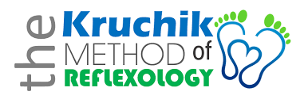

What is Reflexology?
Reflexology is a natural and safe therapy that helps to activate the healing responses of the body.
There are reflexes in the feet, by stimulating these reflexes, messages are carried along the neural pathways
to the corresponding body part. This in turn triggers the body to go into a state of balance and normal functioning.
A reflexologist does NOT prescribe, diagnose or treat specific conditions but there are many benefits to this non-invasive treatment.
Pain Management

Mauricio (Moshe) Kruchik is a world-renowned reflexologist and instructor who has travelled the globe to teach his methods.
He is the creator of the Kruchik Method of Reflexology and he believes that reflexology is surprisingly, wise and simple. Learn More
There are 42 techniques that make up the Kruchik Method of Reflexology that can be used in combination to address many conditions such as:
· Carpal Tunnel Syndrome
· Frozen Shoulder
· Arthritis
· Migraines
· Joint pain
· Sciatica
· Chronic Pain
· Fibromyalgia
· ADHD
· Plantar Fasciitis
· Mental Health
· Auto-immune diseases
. Balance